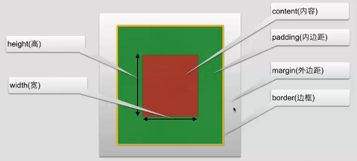

CSS 常用操作
杂烩
opacity:0.5; 透明度一半
border-radius:30px; 圆角
display:inline; 显示为一行。
CSS 背景
| 属性 | 描述 |
|---|---|
| background-attachment | :fixed;背景图像是否固定或者随着页面的其余部分滚动，默认会随着屏幕滚动 |
| background-color | 设置背景颜色 |
| background-image | :url("x.jpg");把图片设置为背景 |
| background-repeat | :no-repeat;设置背景图像是否重复 |
| background-position | :right center;设置背景图片的起始位置，从右边中间开始显示，或者具体位置(background-position:100px 100px;),也可用百分比表示 |
| background-size | :100px 100px;规定背景图片的尺寸 |
| background-origin | 规定背景图片的定位区域 |
| background-clip | 规定背景的绘制区域 |
CSS 文本
| 属性 | 描述 |
|---|---|
| color | 文本颜色 |
| direction | 文本方向 |
| line-height | 行高 |
| letter-spacing | 字符间距 |
| text-align | 对齐元素中的文本 |
| text-decoration | 向文本添加修饰 |
| text-indent | 缩进元素中文本的首行 |
| text-transform | :capitalize;首字母大写。:lowercase;全部小写。:uppercase;全部大写。 |
| unicode-bidi | 设置文本方向 |
| white-space | 元素中空白的处理方式 |
| word-spacing | 字间距 |
| text-shadow | :5px 5px 1px red;(距左的距离，距上方的距离，清晰度，背景颜色)向文本添加阴影 |
| word-wrap | :normal;正常，自动换行，不会拆开英文。规定文本的换行规则 |
CSS 字体
| 属性 | 描述 |
|---|---|
| font-family | 设置字体系列 |
| font-size | 设置字体尺寸 |
| font-style | 设置字体风格 |
| font-variant | 以小型大写字体或正常字体显示文本 |
| font-weight | 设置字体的粗细 |
为了防止用户端没有字体，可引用，并把字体一起发到服务器
@font-face{
font-family: myfont;
src: url();
}
div{font-family: myfont;}
CSS 链接
CSS 链接的四种状态:
a:link 普通的、未被访问的链接
a:visited 用户已访问的链接
a:hover 鼠标指针位于链接的上方
a:active 链接被单击的时刻
链接属性:
text-decoration:none; 取消下划线
CSS 列表
CSS 列表属性允许你放置、改变列表标志，或者将图像作为列表项标志
| 属性 | 描述 |
|---|---|
| list-style | :none;取消效果。简写列表项 |
| list-style-image | :url("x.jpg");列表项图像 |
| list-style-position | :inside;向内一些。:outside;向外一些。列表标志位置 |
| list-style-type | :circle;空心圆。列表类型 |
CSS 表格
边框
#tb{border:1px solid red;}
折叠边框
#tb{border-collapse: collapse;}
CSS 轮廓
突出元素
| 属性 | 描述 |
|---|---|
| outline | 设置轮廓属性 |
| outline-color | 设置轮廓的颜色 |
| outline-style | :dotted;设置轮廓的样式 |
| outline-width | 设置轮廓的宽度 |
CSS 定位
CSS 定位机制
普通流: 元素按照其在 HTML 中的位置顺序决定排布的过程
浮动 float:left;向左浮动。取消浮动为 clear:both;
绝对布局
| 属性 | 描述 |
|---|---|
| position | :absolute;从页面脱离不具有位置。:fixed;固定在页面上，不管怎么滚动。把元素放在一个静态的、绝对的、相对的、或固定的位置中 |
| top | 元素向上的偏移量 |
| left | 元素向左的偏移量 |
| right | 元素向右的偏移量 |
| bottom | 元素向下的偏移量 |
| overflow | 设置元素溢出其区域发生的事情 |
| clip | 设置元素显示的形状 |
| vertical-align | 设置元素垂直对齐方式 |
| z-index | 值大的在上面，设置元素的堆叠顺序 |
CSS 盒子模式

尺寸操作
| 属性 | 描述 |
|---|---|
| height | 设置元素高度 |
| line-height | 行高 |
| max-height | 设置元素的最大高度 |
| max-width | 设置元素的最大宽度 |
| min-width | 设置元素的最小宽度 |
| min-height | 设置元素的最小高度 |
| width | 设置元素的宽度 |
分类操作
| 属性 | 描述 |
| clear | 设置一个元素的侧面是否允许其他的浮动元素 |
| cursor | :cell;规定当指向某元素之上时显示的指针类型 |
| display | :inline;如把列表显示为一行。设置是否及如何显示元素 |
| float | 定义元素在哪个方向浮动 |
| visibility | :hidden;不可见。设置是否可见或不可见 |